Sloppy birds is a endless runner game which was inspired by the famous game flappy birds . I recreated a newer and more interesting version of that game with new themes and exciting gameplay.
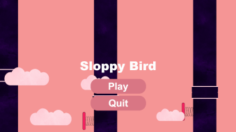
Monster Chase
Monster Chase is a 2D platformer game. It is a fun single player game made to pass time during leisure. A game where monsters chase a human character and tries to eat him while he jumps high or stays low to save himself.
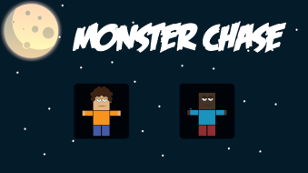
PacMunch
PacMunch is a 2D action chase game which was heavily inspired by the famous game pacman.
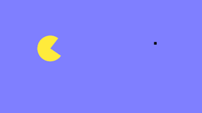
Save The Ball
Save The Ball is a 2D Arcade Action game. It was created with Love 2D and the programming language was Lua.
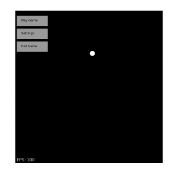
Clicker
Clicker is a casual game where you click on a red big circle and one point is added to your score board and the red circle moves to another location on the screen.
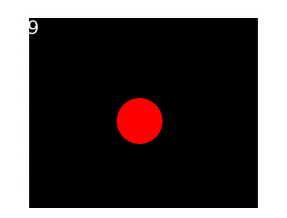
Sprite Movement
Sprite Movement is a simple game where a character is standing still and the player can move it from left to right and the character will move with a nice walking animation.
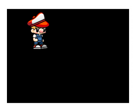
Web Development
Blog Website
A Car Blog Website with interactive CSS buttons and links. The website was designed with Figma and developed with HTML & CSS. Every page is meticulously designed to provide a better user experience.
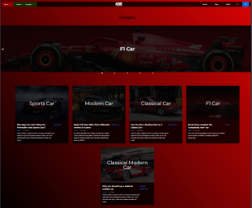
StudyBuddy
StudyBuddy is a web development project of mine where you can create study rooms and interact with other members. I have used HTML , CSS & JS for FrontEnd and Django for Backend.
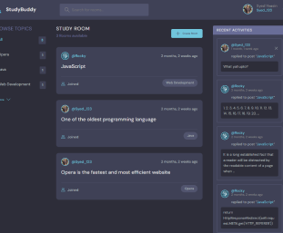
ClubWebsite
Computer Club Website’s Linux Base Networking page was redesigned by me.
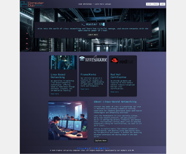
CalculatorProgram
Simple Calculator designed to help users calculate basic operations like addition, subtraction, multiplication, division. It was built with HTML, CSS, JS.
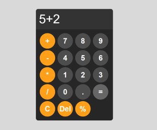
Graphics Designing
HeartToSkull
HeartToSkull is a passion project of mine, where I animated a yellow heart to a skull drawing on Adobe Animate.
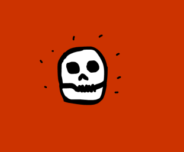
AntlerGlowing
Glowing Antler was a photoshop project where I learnt how lights emit and how to make a natural glowing effect.
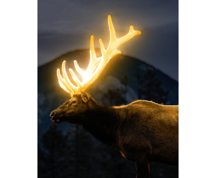
Lone Penguin
Lone Penguin is a Adobe illustrator project of mine where I created a penguin with vector shapes and a background highlighting the surroundings.
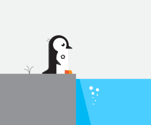
PurpleWay
A photoshop project where I made graphics of purple planet like a fantasy world.
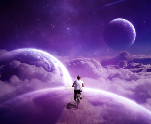
Bulb Fish
Bulb Fish is a photoshop project where I have removed the inner parts of a bulb and replaced it with fish swimming in wavy water.
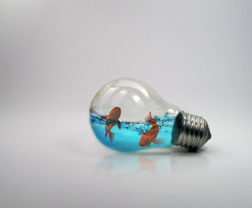
Dreamy Night
Dreamy Night is another photoshop passion project where I have created a moody night where a man is standing on a rusted car beside a campfire.